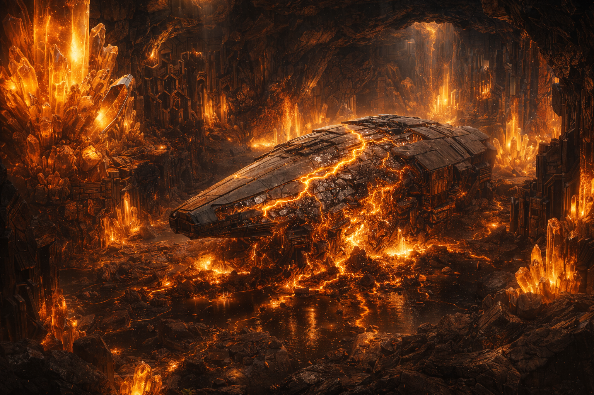
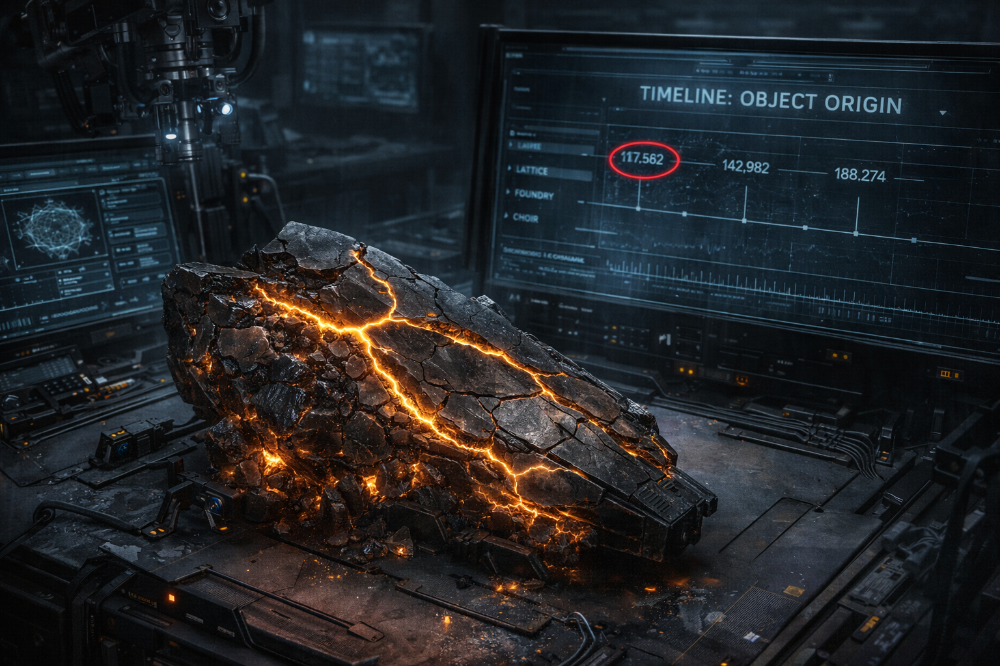
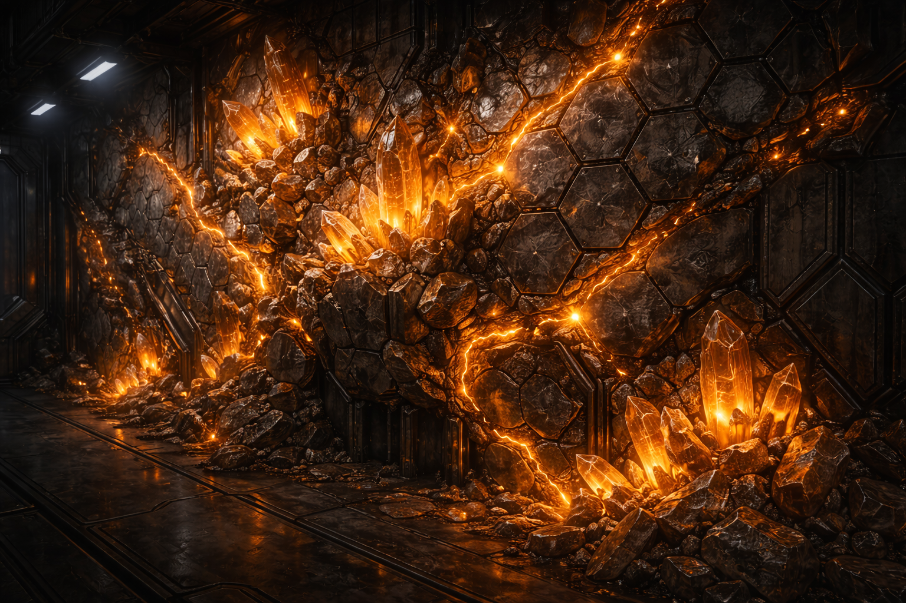

THE LATTICE
They grew ships from mineral substrate in crystal caverns. The process works. Nobody can explain why.
Grown, not built.
Lattice ships form in crystal caverns from mineral substrate. The hull bonds at a molecular level. Energy conduits follow natural crystal veins through the plating. Compact engineers can replicate the process step by step. None of them can explain the mechanism that makes it work.
The Foundry builds a Viper in nine days using documented procedures. A Lattice growth chamber produces a Titan in fourteen, using a process that reads like geology with opinions. The mineral chooses where to bond. The crystal veins route themselves. The engineers set conditions and wait.

I followed the procedure exactly. Same substrate, same temperature, same mineral composition. The first attempt bonded perfectly. The second attempt, identical conditions, produced inert rock. The third bonded again. There is no variable I can identify that differs between success and failure.
Success rate for Lattice mineral bonding: 68%. Failure rate: 32%. Predictive model accuracy: 0%.
The dates don't fit.
Carbon dating on Titan hull fragments returns dates centuries older than anything from the other factions. Foundry alloys, Choir bio-membrane, Weave anchor brackets — all cluster within the same archaeological period. Lattice mineral dates sit alone, far earlier on the timeline.
Either the Lattice existed long before the others, building in isolation for centuries before the other four civilizations appeared. Or the mineral-bonding process produces anomalous isotope signatures that make the material appear older than it is. The Compact has funded three studies to determine which. All three returned inconclusive results. All three principal investigators requested reassignment afterward.

The mineral is still active.
In deep Rift corridors, survey teams have documented hexagonal mineral formations on the walls that weren't present in previous surveys. The formations are structural — load-bearing walls, supports, bracing — but for what is unclear. They aren't attached to any known Lattice facility. They appear to be building something on their own.
The mineral substrate is active the way coral is active. Not sentient, but growing, following a template. The template wasn't written by anyone alive. The formations expand at roughly three centimeters per year. At that rate, they've been growing since before the Collapse. Whatever they're building, they're not done.

It's building a room. I can see the corners forming. I measured the angles — they're consistent with Lattice architectural standards. This corridor is nowhere near a Lattice site. There is no growth chamber here. There is no substrate supply. It's growing from the wall itself.
Estimated completion date for the Corridor 22-Sigma formation at current growth rate: 340 years. The Compact has not allocated monitoring resources past the current fiscal year.
Two templates. Dense and denser.
Lattice growth chambers produce two ship classes. Both are heavy. Both are slow. Both are very difficult to destroy. Lattice pilots don't outmaneuver opponents. They outlast them.